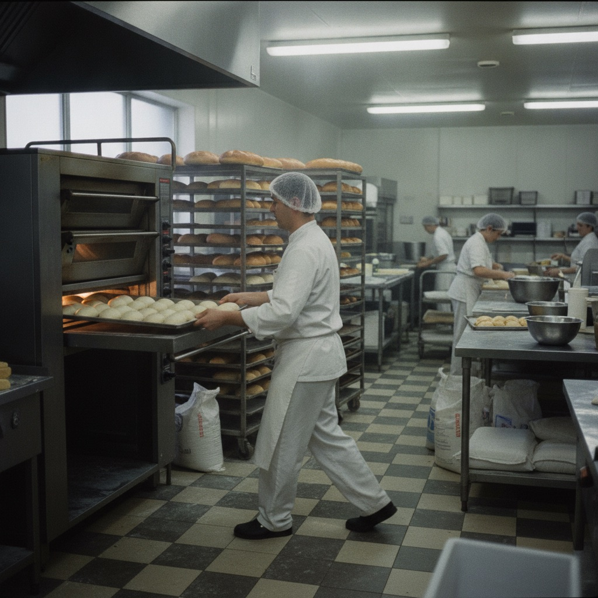

Directions: For each question, you will listen to four short statements about a photograph. Select the statement that best describes what is happening in the picture.
Question 1
听 4 句陈述，选出最符合照片的一句（只读一遍）
1.Choose the statement that best describes the photograph.
AShe's erasing the whiteboard.
BShe's drawing a diagram on the whiteboard.
CShe's handing out printed reports.
DShe's plugging in a laptop.
录音原文 / 参考描述
照片内容：In an open-plan office, a woman in a cardigan stands beside a large whiteboard covered with diagrams, holding a marker up as she draws an arrow between two boxes; seated colleagues watch from a nearby table.
A:She's erasing the whiteboard.
B:She's drawing a diagram on the whiteboard.
C:She's handing out printed reports.
D:She's plugging in a laptop.
解析 / Explanation
B. The woman is drawing a diagram on the whiteboard with a marker, so (B) is correct. She is not erasing, handing out reports, or plugging in a laptop.
Question 2
听 4 句陈述，选出最符合照片的一句（只读一遍）
2.Choose the statement that best describes the photograph.
AThe conductor is signalling with his arm.
BThe train is being washed at a depot.
CPassengers are buying tickets from a machine.
DA worker is sweeping the platform.
录音原文 / 参考描述
照片内容：At a train station platform, a conductor in a navy uniform leans out of an open carriage door, raising one arm to signal the driver while passengers with bags wait along the edge of the platform.
A:The conductor is signalling with his arm.
B:The train is being washed at a depot.
C:Passengers are buying tickets from a machine.
D:A worker is sweeping the platform.
解析 / Explanation
A. The conductor is raising his arm to signal, so (A) is correct. The train is not being washed, no one is buying tickets, and no one is sweeping.
Question 3

听 4 句陈述，选出最符合照片的一句（只读一遍）
3.Choose the statement that best describes the photograph.
AHe's kneading dough on a table.
BHe's decorating a cake with frosting.
CHe's placing a tray into the oven.
DHe's washing baking trays in the sink.
录音原文 / 参考描述
照片内容：Inside a busy commercial kitchen, a baker in a white coat and hairnet slides a tray of unbaked bread rolls into a large open oven, with racks of cooling loaves lined up behind him.
A:He's kneading dough on a table.
B:He's decorating a cake with frosting.
C:He's placing a tray into the oven.
D:He's washing baking trays in the sink.
解析 / Explanation
C. The baker is sliding a tray of rolls into the oven, so (C) is correct. He is not kneading, decorating a cake, or washing trays.
Question 4
听 4 句陈述，选出最符合照片的一句（只读一遍）
4.Choose the statement that best describes the photograph.
AHe's riding the bicycle down the street.
BHe's locking the bicycle to a rack.
CHe's washing the bicycle with a hose.
DHe's inflating a bicycle tire.
录音原文 / 参考描述
照片内容：On a suburban driveway, a young man in shorts crouches beside a bicycle turned upside down, using a small pump to inflate the front tire while a toolbox lies open on the pavement.
A:He's riding the bicycle down the street.
B:He's locking the bicycle to a rack.
C:He's washing the bicycle with a hose.
D:He's inflating a bicycle tire.
解析 / Explanation
D. The man is pumping air into the bicycle tire, so (D) is correct. He is not riding, locking, or washing the bicycle.
Question 5
听 4 句陈述，选出最符合照片的一句（只读一遍）
5.Choose the statement that best describes the photograph.
AShe's folding finished garments.
BShe's unrolling fabric on a table.
CShe's sewing a hem on a machine.
DShe's ringing up a sale at the till.
录音原文 / 参考描述
照片内容：In a fabric shop, a saleswoman unrolls a bolt of patterned cloth across a wide cutting table, smoothing it flat with both hands as shelves of colourful rolls rise behind her.
A:She's folding finished garments.
B:She's unrolling fabric on a table.
C:She's sewing a hem on a machine.
D:She's ringing up a sale at the till.
解析 / Explanation
B. The saleswoman is unrolling fabric across the cutting table, so (B) is correct. She is not folding garments, sewing, or ringing up a sale.
Question 6
听 4 句陈述，选出最符合照片的一句（只读一遍）
6.Choose the statement that best describes the photograph.
AThe vendor is handing over an ice cream cone.
BThe vendor is folding up the umbrella.
CThe child is building a sandcastle.
DA lifeguard is watching from a tower.
录音原文 / 参考描述
照片内容：At a beachfront boardwalk, a vendor hands an ice cream cone to a small child while a colourful cart with a striped umbrella stands beside them and gulls hover in the background.
A:The vendor is handing over an ice cream cone.
B:The vendor is folding up the umbrella.
C:The child is building a sandcastle.
D:A lifeguard is watching from a tower.
解析 / Explanation
A. The vendor is handing an ice cream cone to the child, so (A) is correct. No sandcastle is being built, the umbrella is up, and no lifeguard is shown acting.
PART 2 — Question-Response（7–31）
Directions: You will hear a question or statement followed by three responses. Select the best response to the question or statement.
Question 7
听一句问话/陈述 + 三个回应，选出最恰当的回答
7.Select the best response.
AAround a dozen of them.
BIn the cupboard behind reception.
CYes, they're brand new.
录音原文 / Transcript（问句 + 三个回应）
Where do we store the spare projector bulbs?
Around a dozen of them.
In the cupboard behind reception.
Yes, they're brand new.
解析 / Explanation
B. 'Where' asks for a place, so 'In the cupboard behind reception' (B) is correct. (A) gives a quantity and (C) answers a yes/no question.
Question 8
听一句问话/陈述 + 三个回应，选出最恰当的回答
8.Select the best response.
AIn the finance department.
BFirst thing Monday morning.
CAbout a ten percent rise.
录音原文 / Transcript（问句 + 三个回应）
When will the sales figures be ready?
In the finance department.
First thing Monday morning.
About a ten percent rise.
解析 / Explanation
B. 'When' calls for a time, so 'First thing Monday morning' (B) is correct. (A) gives a place and (C) gives a figure.
Question 9
听一句问话/陈述 + 三个回应，选出最恰当的回答
9.Select the best response.
AThe events coordinator did.
BIn the storage room.
CAbout fifty of them.
录音原文 / Transcript（问句 + 三个回应）
Who ordered the extra chairs for the seminar?
The events coordinator did.
In the storage room.
About fifty of them.
解析 / Explanation
A. 'Who' asks for a person, so 'The events coordinator did' (A) is correct. (B) answers 'where' and (C) answers 'how many'.
Question 10
听一句问话/陈述 + 三个回应，选出最恰当的回答
10.Select the best response.
AOn the second level.
BThey're resurfacing the pavement.
CUntil about five o'clock.
录音原文 / Transcript（问句 + 三个回应）
Why is the parking lot blocked off today?
On the second level.
They're resurfacing the pavement.
Until about five o'clock.
解析 / Explanation
B. 'Why' asks for a reason, so 'They're resurfacing the pavement' (B) is correct. (A) gives a place and (C) gives a time.
Question 11
听一句问话/陈述 + 三个回应，选出最恰当的回答
11.Select the best response.
AIt was an expensive trip.
BOn the fifteenth of the month.
CSubmit your receipts to accounting.
录音原文 / Transcript（问句 + 三个回应）
How do I claim my travel expenses?
It was an expensive trip.
On the fifteenth of the month.
Submit your receipts to accounting.
解析 / Explanation
C. 'How' asks for a method, so 'Submit your receipts to accounting' (C) is correct. (A) echoes 'expense' and (B) gives a date.
Question 12
听一句问话/陈述 + 三个回应，选出最恰当的回答
12.Select the best response.
AYes, that would be helpful.
BIt's a long meeting.
CIn the conference room.
录音原文 / Transcript（问句 + 三个回应）
Would you like a copy of the meeting agenda?
Yes, that would be helpful.
It's a long meeting.
In the conference room.
解析 / Explanation
A. The offer is accepted with 'Yes, that would be helpful' (A). (B) comments on the meeting and (C) gives a place.
Question 13
听一句问话/陈述 + 三个回应，选出最恰当的回答
13.Select the best response.
AA lot of stock inside.
BNear the back exit.
CYes, I locked it on my way out.
录音原文 / Transcript（问句 + 三个回应）
You've locked the storeroom, haven't you?
A lot of stock inside.
Near the back exit.
Yes, I locked it on my way out.
解析 / Explanation
C. The tag question checks the locking, so 'Yes, I locked it on my way out' (C) is correct. (A) and (B) don't confirm it.
Question 14
听一句问话/陈述 + 三个回应，选出最恰当的回答
14.Select the best response.
ASure, I'll take her now.
BA fresh supply.
CShe started on Monday.
录音原文 / Transcript（问句 + 三个回应）
Can you show the new intern where the supplies are?
Sure, I'll take her now.
A fresh supply.
She started on Monday.
解析 / Explanation
A. The request is met with agreement, so 'Sure, I'll take her now' (A) is correct. (B) and (C) reuse words without helping.
Question 15
听一句问话/陈述 + 三个回应，选出最恰当的回答
15.Select the best response.
AA long-haul flight.
BEconomy is fine for me.
CAt the check-in counter.
录音原文 / Transcript（问句 + 三个回应）
Do you want to fly economy or business class?
A long-haul flight.
Economy is fine for me.
At the check-in counter.
解析 / Explanation
B. The choice question is answered by 'Economy is fine for me' (B). (A) describes the flight and (C) gives a place.
Question 16
听一句问话/陈述 + 三个回应，选出最恰当的回答
16.Select the best response.
AOn the tenth floor.
BAt three in the afternoon.
CIt's a large team.
录音原文 / Transcript（问句 + 三个回应）
What time is the video call with the Berlin office?
On the tenth floor.
At three in the afternoon.
It's a large team.
解析 / Explanation
B. 'What time' asks for a time, so 'At three in the afternoon' (B) is correct. (A) gives a place and (C) describes the team.
Question 17
听一句问话/陈述 + 三个回应，选出最恰当的回答
17.Select the best response.
AIt's quite fast already.
BAn extra twenty dollars a month.
CIn the server room.
录音原文 / Transcript（问句 + 三个回应）
How much would it cost to upgrade our internet plan?
It's quite fast already.
An extra twenty dollars a month.
In the server room.
解析 / Explanation
B. 'How much' asks for a price, so 'An extra twenty dollars a month' (B) is correct. (A) is a comment and (C) gives a place.
Question 18
听一句问话/陈述 + 三个回应，选出最恰当的回答
18.Select the best response.
AA well-written newsletter.
BTo all subscribers.
CActually, it's scheduled for Thursday.
录音原文 / Transcript（问句 + 三个回应）
Isn't the quarterly newsletter going out today?
A well-written newsletter.
To all subscribers.
Actually, it's scheduled for Thursday.
解析 / Explanation
C. The negative question checks the timing, so 'Actually, it's scheduled for Thursday' (C) is correct. (A) and (B) don't address the date.
Question 19
听一句问话/陈述 + 三个回应，选出最恰当的回答
19.Select the best response.
AYes, all classes are included.
BIt's a modern gym.
CJust down the road.
录音原文 / Transcript（问句 + 三个回应）
Do you know whether the gym membership includes classes?
Yes, all classes are included.
It's a modern gym.
Just down the road.
解析 / Explanation
A. The embedded yes/no question is answered by 'Yes, all classes are included' (A). (B) and (C) describe the gym instead.
Question 20
听一句问话/陈述 + 三个回应，选出最恰当的回答
20.Select the best response.
AHe printed a copy.
BGood call, I'll read it again.
CIn the design folder.
录音原文 / Transcript（问句 + 三个回应）
Let's proofread the brochure once more before printing.
He printed a copy.
Good call, I'll read it again.
In the design folder.
解析 / Explanation
B. The suggestion is accepted with 'Good call, I'll read it again' (B). (A) and (C) reuse words without responding.
Question 21
听一句问话/陈述 + 三个回应，选出最恰当的回答
21.Select the best response.
AWe need more envelopes.
BThe one in the red van.
CYesterday afternoon.
录音原文 / Transcript（问句 + 三个回应）
Which courier delivered the package this morning?
We need more envelopes.
The one in the red van.
Yesterday afternoon.
解析 / Explanation
B. 'Which courier' asks you to identify one, so 'The one in the red van' (B) is correct. (A) is off-topic and (C) gives a time.
Question 22
听一句问话/陈述 + 三个回应，选出最恰当的回答
22.Select the best response.
AA bright room.
BWe're low on notepads.
CLet me check the switch panel.
录音原文 / Transcript（问句 + 三个回应）
The lights in the meeting room won't turn on.
A bright room.
We're low on notepads.
Let me check the switch panel.
解析 / Explanation
C. The problem invites a helpful response, so 'Let me check the switch panel' (C) is correct. (A) and (B) don't address the lights.
Question 23
听一句问话/陈述 + 三个回应，选出最恰当的回答
23.Select the best response.
ANo, they'll let us know tomorrow.
BA tasty menu.
CIt serves eighty guests.
录音原文 / Transcript（问句 + 三个回应）
Has the caterer confirmed the menu yet?
No, they'll let us know tomorrow.
A tasty menu.
It serves eighty guests.
解析 / Explanation
A. The yes/no question about the menu is answered by 'No, they'll let us know tomorrow' (A). (B) and (C) describe the menu instead.
Question 24
听一句问话/陈述 + 三个回应，选出最恰当的回答
24.Select the best response.
AIt's very detailed.
BAbout a meter wide.
COn the wall by the elevator.
录音原文 / Transcript（问句 + 三个回应）
Where should I hang the new floor plan?
It's very detailed.
About a meter wide.
On the wall by the elevator.
解析 / Explanation
C. 'Where' asks for a place, so 'On the wall by the elevator' (C) is correct. (A) is a comment and (B) gives a measurement.
Question 25
听一句问话/陈述 + 三个回应，选出最恰当的回答
25.Select the best response.
AYes, I'll order a refill.
BIn a couple of minutes.
CA cold drink.
录音原文 / Transcript（问句 + 三个回应）
The water cooler on this floor is empty, isn't it?
Yes, I'll order a refill.
In a couple of minutes.
A cold drink.
解析 / Explanation
A. The tag question seeks agreement, so 'Yes, I'll order a refill' (A) is correct. (B) gives a time and (C) is unrelated.
Question 26
听一句问话/陈述 + 三个回应，选出最恰当的回答
26.Select the best response.
AIt was very informative.
BAt the front desk.
CThe morning works better for me.
录音原文 / Transcript（问句 + 三个回应）
Do you prefer the morning or the afternoon session?
It was very informative.
At the front desk.
The morning works better for me.
解析 / Explanation
C. The choice question is answered by 'The morning works better for me' (C). (A) refers to a past event and (B) gives a place.
Question 27
听一句问话/陈述 + 三个回应，选出最恰当的回答
27.Select the best response.
AHe teamed up with her.
BA packed schedule.
CThat's a great idea.
录音原文 / Transcript（问句 + 三个回应）
Why don't we invite the whole team to the workshop?
He teamed up with her.
A packed schedule.
That's a great idea.
解析 / Explanation
C. 'Why don't we' is a suggestion, so 'That's a great idea' (C) is correct. (A) reuses 'team' and (B) is a fragment.
Question 28
听一句问话/陈述 + 三个回应，选出最恰当的回答
28.Select the best response.
AWe reached a fair deal.
BBy phone this time.
CNext week, hopefully.
录音原文 / Transcript（问句 + 三个回应）
How was the negotiation with the supplier?
We reached a fair deal.
By phone this time.
Next week, hopefully.
解析 / Explanation
A. 'How was it' asks for an evaluation, so 'We reached a fair deal' (A) is correct. (B) answers 'how' as method and (C) gives a future time.
Question 29
听一句问话/陈述 + 三个回应，选出最恰当的回答
29.Select the best response.
AThe machine runs well.
BI think it's still unconfirmed.
CIn the utility room.
录音原文 / Transcript（问句 + 三个回应）
Didn't we already schedule the maintenance visit?
The machine runs well.
I think it's still unconfirmed.
In the utility room.
解析 / Explanation
B. The negative question is answered by 'I think it's still unconfirmed' (B). (A) is a comment and (C) gives a location.
Question 30
听一句问话/陈述 + 三个回应，选出最恰当的回答
30.Select the best response.
AThe assistant volunteered.
BIt ran a bit long.
CSometime after noon.
录音原文 / Transcript（问句 + 三个回应）
Who's writing the minutes for today's meeting?
The assistant volunteered.
It ran a bit long.
Sometime after noon.
解析 / Explanation
A. 'Who' asks for a person, so 'The assistant volunteered' (A) is correct. (B) comments on the meeting and (C) gives a time.
Question 31
听一句问话/陈述 + 三个回应，选出最恰当的回答
31.Select the best response.
AIt arrived yesterday.
BShe set the alarm.
CThat would be wonderful, thank you.
录音原文 / Transcript（问句 + 三个回应）
I'd be happy to help you set up your new workstation.
It arrived yesterday.
She set the alarm.
That would be wonderful, thank you.
解析 / Explanation
C. The friendly offer is accepted with 'That would be wonderful, thank you' (C). (A) is a comment and (B) reuses 'set' without answering.
PART 3 — Conversations（32–70）
Directions: You will hear several conversations between two or more people. You will be asked to answer three questions about what the speakers say. Select the best response.
Questions 32–34
听一段对话，回答下面 3 题
32.What are the speakers buying?
AA new copier
BNew computers
COffice furniture
DA home printer
录音原文 / Transcript
W:Devon, we've been approved to buy a new copier for the print room. I've got the supplier's spec sheet here.
M:Good. The main thing is it has to print in colour — the marketing team keeps asking for colour brochures.
W:Agreed. And it needs to be fast; the old one crawls. I'd want at least forty pages a minute.
M:And we've got a two-thousand-dollar ceiling. So: colour, at least forty a minute, and under two thousand.
W:Only one model checks all three boxes, then. I'll put the order in.
解析 / Explanation
A. They've been approved 'to buy a new copier for the print room.'
33.What does the man say is the most important feature?
AColor printing
BLow noise
CA warranty
DA small size
解析 / Explanation
A. He says 'the main thing is it has to print in colour.'
34.Look at the graphic. Which model will they most likely order?
AX100
BX200
CX300
DX400
解析 / Explanation
C. They need color, at least 40 ppm, and under $2,000. X100 is mono; X200 is only 25 ppm; X400 is $2,800. X300 (color, 45 ppm, $1,900) meets all three.
Questions 35–37
听一段对话，回答下面 3 题
35.Why is the woman calling?
ATo place a new order
BTo cancel an order
CTo change an address
DTo report damaged items
录音原文 / Transcript
W:Hello, I'm calling about order five-oh-eight — a case of drinking glasses for our restaurant. When it arrived this morning, six of the twenty-four glasses were cracked.
M:I'm so sorry to hear that. Let me pull up the order. It sounds like the box wasn't packed with enough padding for shipping.
W:Possibly. Either way, I need six replacements — we open for a big booking on Saturday.
M:Of course. I'll ship six new glasses today by express so they reach you Thursday, and there's no charge. Please keep the broken ones until the new box arrives, just for our records.
W:That works. As long as they're here before Saturday, we'll be fine.
解析 / Explanation
D. She says 'six of the twenty-four glasses were cracked.'
36.What does the man think caused the problem?
AThe wrong item was sent
BThe delivery was late
CThe box lacked enough padding
DThe order was duplicated
解析 / Explanation
C. He says 'the box wasn't packed with enough padding for shipping.'
37.What does the woman imply when she says, "As long as they're here before Saturday, we'll be fine"?
AShe will accept the replacements if they arrive in time
BShe wants a full refund instead
CShe thinks Thursday is too late
DShe plans to cancel the order
解析 / Explanation
A. She accepts the replacements on the condition that they arrive before her Saturday booking.
Questions 38–40
听一段对话，回答下面 3 题
38.What does the man want to change?
AThe pickup time
BThe drop-off city
CThe type of car
DThe payment method
录音原文 / Transcript
M:Good afternoon. I've got a car booked to collect me from the airport this Friday at three, but my flight's been moved, so I'll now land at eleven in the morning.
W:No problem, let me update that. I've changed your pickup to eleven-fifteen to allow time for baggage. The fare stays the same.
M:Thank you. One more thing — could the driver stop at my hotel first, then take me on to the conference centre?
W:Certainly. I'll add the hotel as a first stop and note it for the driver. There's a small charge for the extra stop, is that alright?
M:That's fine. I'll look out for the driver at arrivals, then.
解析 / Explanation
A. His flight moved, so he needs the pickup changed from three to the morning.
39.What extra request does the man make?
AA larger vehicle
BAn earlier driver
CA child seat
DA stop at his hotel first
解析 / Explanation
D. He asks the driver to 'stop at my hotel first, then take me on to the conference centre.'
40.What does the woman say about the extra stop?
AIt is not allowed
BThere is a small charge for it
CIt will delay the trip by an hour
DThe driver must approve it
解析 / Explanation
B. She says 'there's a small charge for the extra stop.'
Questions 41–43
听一段对话，回答下面 3 题
41.What are the speakers planning?
AA product catalogue photo shoot
BA store opening
CA press conference
DA packaging redesign
录音原文 / Transcript
M:Thanks for gathering. The new catalogue shoot is in two weeks, and I want everything nailed down today. Freya, how's the shot list looking?
W:It's nearly final — forty products across three sets. I just need the new packaging samples from Ronan's team before I can lock the styling.
M:Ronan, when will those samples be ready?
M2:Monday at the latest. But I'll be honest — forty products in a single day is a stretch. I'd rather split it over two days than rush and end up with flat, careless photos.
M:Fair enough. Freya, can we book the studio for two days?
W:Yes, and honestly the extra time will make the shots much stronger.
解析 / Explanation
A. The man says 'the new catalogue shoot is in two weeks.'
42.What does Freya still need?
AA larger studio
BThe new packaging samples
CA photographer
DClient approval
解析 / Explanation
B. She says she 'just need[s] the new packaging samples from Ronan's team.'
43.What does Ronan mean when he says he'd "rather split it over two days"?
AHe thinks doing forty products in one day would hurt the quality
BHe wants to cancel the shoot
CHe needs more products
DHe cannot attend on the first day
解析 / Explanation
A. He worries forty products in one day would produce 'flat, careless photos,' so he wants more time.
Questions 44–46
听一段对话，回答下面 3 题
44.What problem are the speakers discussing?
AAn oven that won't heat
BA power outage
CA blocked sink
DA walk-in refrigerator not cooling
录音原文 / Transcript
W:Thanks for coming so quickly. The walk-in refrigerator in the kitchen isn't holding temperature — it's been climbing since last night, and I'm worried about the stock.
M:Let me check it out. Right, the thermostat has failed, so the compressor isn't kicking in when it should. That's why it's warming up.
W:Can you fix it today? We've got a fully booked dinner service tonight.
M:I can — I carry that thermostat on the van, so it's about a ninety-minute job. In the meantime, I'd move anything perishable into your backup fridge so nothing spoils.
W:Good idea. I'll get the kitchen team to shift the fresh stock over right now.
解析 / Explanation
D. 'The walk-in refrigerator in the kitchen isn't holding temperature.'
45.What does the man say caused the problem?
AA failed thermostat
BA broken door seal
CA refrigerant leak
DA tripped breaker
解析 / Explanation
A. He says 'the thermostat has failed, so the compressor isn't kicking in.'
46.What will the woman do in the meantime?
ACancel the dinner service
BMove perishable stock to a backup fridge
COrder a new refrigerator
DTurn off the kitchen
解析 / Explanation
B. She'll have the kitchen team 'shift the fresh stock over' to the backup fridge.
Questions 47–49
听一段对话，回答下面 3 题
47.What is the woman requesting?
AA pay raise
BA standing desk
CTime off work
DA new office
录音原文 / Transcript
W:Trevor, I wanted to ask about getting a standing desk. I've been having a lot of back pain from sitting all day, and my physiotherapist suggested I try standing more.
M:I'm sorry to hear about the back pain. We've actually got a small budget for ergonomic equipment, so that shouldn't be a problem.
W:That's a relief. I don't need anything fancy — just one I can raise and lower during the day.
M:That's exactly what the adjustable ones do. I'll have facilities order one this week. If it helps, we can look at proper chairs for the rest of the team too.
W:Thank you. I really think it'll make a difference.
解析 / Explanation
B. She asks 'about getting a standing desk.'
48.Why does the woman want it?
ATo have more space
BBecause of back pain from sitting
CTo store more files
DTo be near a window
解析 / Explanation
B. She says she's had 'a lot of back pain from sitting all day.'
49.What does the man imply about the request?
AIt will be difficult to approve
BThere is budget available for it
CShe must pay for it herself
DIt is against policy
解析 / Explanation
B. He says there's 'a small budget for ergonomic equipment, so that shouldn't be a problem.'
Questions 50–52
听一段对话，回答下面 3 题
50.Why is the man at the shop?
ATo buy a new bike
BTo return a purchase
CTo pick up a serviced bike
DTo ask about a warranty
录音原文 / Transcript
M:Hi, I left my bike in for a service last week — the name's Kavanagh. The gears were slipping something awful. Is it ready?
W:Let me find your ticket. Here we are. Good news — it wasn't the gears themselves; a cable had just stretched and needed adjusting. So it came in well under the estimate.
M:Oh, that's a relief. I was bracing myself for a whole new gear set.
W:Not at all. It's tuned up and we test-rode it this morning — shifts perfectly now. The total's forty dollars instead of the hundred and twenty we quoted.
M:Brilliant. I'll take it now, thanks a million.
解析 / Explanation
C. He left his bike 'in for a service' and asks if it's ready.
51.What was actually wrong with the bike?
AThe gears were broken
BThe wheel was bent
CA cable had stretched
DThe brakes had failed
解析 / Explanation
C. The associate says 'a cable had just stretched and needed adjusting.'
52.What does the woman say about the cost?
AIt is higher than the estimate
BIt has not been calculated
CIt is covered by warranty
DIt is lower than the estimate
解析 / Explanation
D. The total is 'forty dollars instead of the hundred and twenty we quoted.'
Questions 53–55
听一段对话，回答下面 3 题
53.Why do the speakers want to upgrade the internet?
ABecause video calls keep freezing
BTo save money
CTo add more phone lines
DTo get a discount
录音原文 / Transcript
M:Nadia, we need to upgrade the office internet. The video calls keep freezing on our current connection.
W:I've got the provider's plans here. What speed do we actually need?
M:For smooth video calls with the whole team, the provider recommended at least five hundred megabits per second.
W:Okay, and finance capped the monthly cost at two hundred dollars.
M:Right. So we need at least five hundred megabits and it has to stay under two hundred a month. Let's take the plan that fits.
解析 / Explanation
A. The man says 'the video calls keep freezing on our current connection.'
54.What is the monthly budget limit?
A$80
B$130
C$200
D$300
解析 / Explanation
C. The woman says 'finance capped the monthly cost at two hundred dollars.'
55.Look at the graphic. Which plan will they most likely choose?
ABasic
BPlus
CPro
DUltra
解析 / Explanation
C. They need at least 500 Mbps and under $200/month. Basic and Plus are too slow; Ultra is $300; Pro (500 Mbps, $180) fits both.
Questions 56–58
听一段对话，回答下面 3 题
56.What are the speakers planning?
AA team offsite
BA client dinner
CA product launch
DA hiring event
录音原文 / Transcript
W:Right, the team offsite is six weeks out, and I wanted the three of us to settle the details. Callum, did you look into venues?
M:I did. There's a lakeside lodge that's gorgeous but a two-hour drive, and a conference hotel just twenty minutes from the office.
W2:The lodge looks stunning, but two hours each way eats into a one-day event. With the hotel, we'd get far more actual time together.
W:That's a good point. Callum, does the hotel have a room big enough for a workshop and breakout spaces?
M:It does — a main room plus two smaller rooms, which is exactly what we need.
W:Then let's book the hotel. I'll reserve it this week before the date's taken.
解析 / Explanation
A. The woman refers to 'the team offsite' six weeks out.
57.Why do they choose the hotel over the lodge?
AIt is cheaper
BIt is much closer, leaving more time for the event
CIt has better food
DIt is by a lake
解析 / Explanation
B. The colleague notes the lodge's two-hour drive 'eats into a one-day event,' while the hotel gives 'more actual time together.'
58.What does Callum confirm about the hotel?
AIt has a pool
BIt is fully booked
CIt offers free parking
DIt has a main room plus breakout rooms
解析 / Explanation
D. He says it has 'a main room plus two smaller rooms.'
Questions 59–61
听一段对话，回答下面 3 题
59.What problem is the man experiencing?
AHis laptop won't turn on
BHis email is full
CHe cannot connect to the VPN
DHis files were deleted
录音原文 / Transcript
M:Hi, I'm working from home today and I can't connect to the company VPN. It just spins and then times out every time.
W:Let me check your account. Ah — we updated the VPN software last night, and your laptop is still running the old version, which the server no longer accepts.
M:That would explain it. I've got files on the internal server I need for a report this afternoon.
W:No problem. I'll push the update to your laptop remotely now. Once it installs, restart the machine and the VPN should connect straight away. Give it about ten minutes.
M:Great, I'll restart once you give me the go-ahead.
解析 / Explanation
C. He 'can't connect to the company VPN.'
60.What does the woman say caused the problem?
AA weak home connection
BA server outage
CA forgotten password
DHis VPN software is out of date
解析 / Explanation
D. She says his laptop 'is still running the old version, which the server no longer accepts.'
61.What does the woman tell the man to do?
ABuy a new laptop
BReset his password
CRestart his laptop after the update installs
DCome into the office
解析 / Explanation
C. She says once the update installs, 'restart the machine.'
Questions 62–64
听一段对话，回答下面 3 题
62.What is the conversation mainly about?
AWhether to focus on webinars or trade shows
BHiring an events coordinator
CRedesigning the booth
DCutting the travel budget
录音原文 / Transcript
W:I've been going over last quarter's lead numbers, and the webinars brought in nearly three times as many qualified leads as the trade shows — and cost a fraction as much.
M:I'm not surprised. A trade show ties you to one city on one day, but anyone in the world can join a webinar from their desk.
W:Exactly. So for next year I'm thinking we run more webinars and cut back to just one or two big trade shows. Your take?
M:I'm all for it. I'd run a monthly webinar series on the topics customers ask about most. I can map out the first quarter's topics by next week.
W:Perfect — send them over and I'll get the team's input.
解析 / Explanation
A. They discuss running more webinars and cutting back on trade shows for next year.
63.Why does the man think webinars generate more leads?
AThey are cheaper to produce
BThey target older customers
CThey are shorter
DAnyone can join from anywhere, not just one city
解析 / Explanation
D. He says a trade show 'ties you to one city on one day,' but anyone can join a webinar from their desk.
64.What does the man say he will do?
ABook two trade shows
BMap out topics for a webinar series
CHire a new specialist
DCancel all events
解析 / Explanation
B. He offers to 'map out the first quarter's topics by next week.'
Questions 65–67
听一段对话，回答下面 3 题
65.What is the man asking about?
AA parking permit
BA carpool scheme
CElectric-car charging points
DBus routes
录音原文 / Transcript
M:Excuse me — I just joined last week. I drive an electric car, and someone said the office has charging points in the car park. Is that right?
W:Yes, there are six charging bays by the north wall. You register your car on the staff app and it lets you book a two-hour slot.
M:That's handy. Do I just turn up and plug in, or do I need to book ahead?
W:You really do need to book — there are only six points and a lot of electric cars now, so they're usually fully reserved by mid-morning.
M:Good to know. I'll register today and book a morning slot.
解析 / Explanation
C. He asks whether 'the office has charging points in the car park.'
66.How does the man reserve a charging slot?
ABy emailing reception
BBy asking his manager
CBy paying at the gate
DBy booking a slot on the staff app
解析 / Explanation
D. She says you 'register your car on the staff app and it lets you book a two-hour slot.'
67.Why does the woman say the man should book ahead?
AThe chargers are often broken
BThe bays fill up because demand is high
CThe app is slow
DThe car park is far away
解析 / Explanation
B. She warns the bays are 'usually fully reserved by mid-morning.'
Questions 68–70
听一段对话，回答下面 3 题
68.What is mainly happening in the conversation?
AA job interview
BA guest complaint
CAn orientation for new employees
DA hotel inspection
录音原文 / Transcript
W:Welcome aboard, both of you. This morning I'll cover our guest-service standards, and this afternoon you'll shadow a supervisor on shift. Leo, you're joining the front desk, correct?
M:That's right. I'm a little nervous about the booking system — I've never used this reservation software before.
W:Don't worry, that's exactly what this morning covers. By lunch you'll be comfortable checking guests in and handling reservations. Owen, you're in the restaurant, so you'll use the same system but focus on table bookings and billing.
M2:Got it. Will we get our staff key cards today, or does that come later?
W:You'll each get a temporary card before lunch, and security will program your permanent ones this afternoon. Any questions before we start? No? Let's begin.
解析 / Explanation
C. The trainer welcomes two new hires and outlines guest-service training and shadowing.
69.What is Leo nervous about?
AMeeting guests
BUsing the reservation software
CFinding the hotel
DThe length of his shift
解析 / Explanation
B. He says he's 'never used this reservation software before.'
70.When will the new hires get their permanent key cards?
ABefore lunch
BAt the end of the week
CThe next morning
DIn the afternoon
解析 / Explanation
D. They get a temporary card before lunch; security programs the permanent ones 'this afternoon.'
PART 4 — Talks（71–100）
Directions: You will hear several talks given by a single speaker. You will be asked to answer three questions about what the speaker says. Select the best response.
Questions 71–73 · Announcement
听一段独白，回答下面 3 题
71.What is the main purpose of the announcement?
ATo announce a room change for a workshop
BTo cancel the conference
CTo introduce a keynote speaker
DTo hand out awards
录音原文 / Transcript
Good morning, delegates, and welcome to day one of the Crossroads Professional Conference. A quick note before the morning sessions begin. The projector in the room assigned to our Team Leadership workshop has failed overnight, and our technicians can't fix it in time. So that session will move next door, into the room currently listed for the Time Management workshop. In turn, Time Management will take over the Team Leadership room, which does not require a projector. The other two workshops are unaffected. Please double-check the digital sign outside each door before you go in, and grab a coffee from the lobby on your way. Enjoy the conference.
解析 / Explanation
A. A projector failure means the Team Leadership session 'will move next door.'
72.Why is the change necessary?
AA speaker is ill
BThe room is too small
CA pipe burst
DA projector has failed
解析 / Explanation
D. 'The projector in the room assigned to our Team Leadership workshop has failed overnight.'
73.Look at the graphic. Which room will the Team Leadership workshop now use?
ARoom 101
BRoom 102
CRoom 103
DRoom 104
解析 / Explanation
D. It moves into the room listed for Time Management, which the board shows as Room 104.
Questions 74–76 · Voicemail
听一段独白，回答下面 3 题
74.Why is the speaker calling?
ATo report on a car repair
BTo sell a new vehicle
CTo schedule an inspection
DTo confirm an insurance claim
录音原文 / Transcript
Hi, this is Dana calling from Fairway Auto Service about your silver sedan. Good news and a bit of not-so-good news. The brake pads you asked us to replace are done, and the car's running smoothly. However, while we had it up on the lift, our mechanic noticed that one of your front tires is worn right down to the tread markers, which really isn't safe for the highway. We'd recommend replacing it before you drive far. We have a matching tire in stock and could fit it this afternoon for about ninety dollars. Give us a ring back if you'd like us to go ahead. Otherwise, your car's ready for pickup anytime after four.
解析 / Explanation
A. Dana calls 'from Fairway Auto Service' about the customer's sedan and its repair.
75.What problem did the mechanic discover?
AA cracked windshield
BA worn front tire
CA dead battery
DAn oil leak
解析 / Explanation
B. 'One of your front tires is worn right down to the tread markers.'
76.What does the speaker ask the customer to do?
ABring the car back next week
BCall back to approve the extra work
CPay online
DPick up the car before four
解析 / Explanation
B. 'Give us a ring back if you'd like us to go ahead' with the new tire.
Questions 77–79 · Advertisement
听一段独白，回答下面 3 题
77.What service is being advertised?
AA restaurant reservation app
BA cooking class
CA grocery delivery of ingredients and recipes
DA farm tour
录音原文 / Transcript
Too busy to plan dinner? Let Harvest Box take the stress out of cooking. Every week we deliver a chilled box of fresh, pre-measured ingredients and easy recipe cards straight to your door — no more last-minute trips to the shop. Each meal takes just thirty minutes to prepare, and our menu changes weekly, with vegetarian and gluten-free options always available. Sign up this week using the code FRESH and your first two boxes ship completely free. You can pause or skip any week with a single tap in our app, so it fits around your life, not the other way around. Visit harvestbox dot com and taste the difference tonight.
解析 / Explanation
C. Harvest Box delivers 'fresh, pre-measured ingredients and easy recipe cards.'
78.What does the code FRESH give new customers?
AA free cookbook
BA discount on the app
CAn extra meal each week
DTheir first two boxes free
解析 / Explanation
D. 'Sign up this week using the code FRESH and your first two boxes ship completely free.'
79.According to the ad, what can customers do through the app?
AOrder takeout
BPause or skip any week
CCall a chef
DRate local farms
解析 / Explanation
B. 'You can pause or skip any week with a single tap in our app.'
Questions 80–82 · Excerpt from a meeting
听一段独白，回答下面 3 题
80.What is the announcement mainly about?
AA new type of paid leave
BA change in office hours
CA salary increase
DA new health insurance plan
录音原文 / Transcript
Right, before everyone rushes off, I've got an update on our leave policy that I think you'll like. Starting in April, we're adding two extra days of paid leave a year that you can use purely for your wellbeing — no doctor's note, no explanation needed. We're calling them recharge days. The idea came straight from your responses to last year's staff survey, where so many of you said you wanted more flexibility. To book one, just mark it in the shared calendar at least a day ahead so your team knows you'll be out. Managers, please make sure your people actually feel free to use them. That's all — thanks, everyone.
解析 / Explanation
A. The company is 'adding two extra days of paid leave a year' called recharge days.
81.Where did the idea for the change come from?
AA manager's proposal
BA government rule
CLast year's staff survey
DA competitor's policy
解析 / Explanation
C. 'The idea came straight from your responses to last year's staff survey.'
82.What must employees do to book a recharge day?
ASubmit a doctor's note
BMark it in the shared calendar a day ahead
CEmail human resources
DGet written approval
解析 / Explanation
B. 'Just mark it in the shared calendar at least a day ahead so your team knows.'
Questions 83–85 · Radio broadcast
听一段独白，回答下面 3 题
83.What is the main news story?
AA road accident
BA new industrial park
CA cycling competition
DA bridge reopening after repairs
录音原文 / Transcript
You're listening to the midday bulletin. Our top local story: the Maple Street Bridge, closed for repairs since early spring, will finally reopen to traffic tomorrow morning. City engineers say the eight-month project has replaced the ageing steel supports and added a wide new lane for cyclists and pedestrians. Drivers who've endured the lengthy detour around the industrial park will be relieved, though officials warn that speed limits on the bridge will remain reduced for the first two weeks while final line-painting is completed. A small ceremony with the mayor is planned for eight o'clock. We'll bring you live coverage. After the break, we turn to this weekend's forecast.
解析 / Explanation
D. 'The Maple Street Bridge... will finally reopen to traffic tomorrow morning.'
84.What has been added to the bridge?
AA toll booth
BA second level
CA wide lane for cyclists and pedestrians
DA rail line
解析 / Explanation
C. The project 'added a wide new lane for cyclists and pedestrians.'
85.What do officials warn drivers about?
AReduced speed limits for the first two weeks
BA weight restriction
CFrequent closures
DA new toll charge
解析 / Explanation
A. 'Speed limits on the bridge will remain reduced for the first two weeks.'
Questions 86–88 · Tour information
听一段独白，回答下面 3 题
86.What are the listeners touring?
AA historic sailing ship
BA naval museum
CA shipbuilding factory
DA lighthouse
录音原文 / Transcript
Good afternoon, and thank you for joining today's tour of the Merryweather, one of the last wooden sailing ships of her kind still afloat. A few points before we climb aboard. The deck can be uneven and the doorways below are low, so please mind your head and hold the handrails on the ladders. We'll begin on the upper deck, move down to the captain's quarters, and end in the cargo hold, where a short film explains the ship's trading history. I'm afraid the crow's nest at the top of the mast is not open to visitors for safety reasons. Once we finish, the gift shop on the pier stocks model kits of the very ship you're standing on.
解析 / Explanation
A. The tour is of 'the Merryweather, one of the last wooden sailing ships... still afloat.'
87.What are the listeners asked to be careful about?
ALoud noises
BWet paint
CSlippery grass
DLow doorways and uneven decks
解析 / Explanation
D. 'The deck can be uneven and the doorways below are low, so please mind your head.'
88.What part of the ship is closed to visitors?
AThe captain's quarters
BThe cargo hold
CThe crow's nest
DThe upper deck
解析 / Explanation
C. 'The crow's nest at the top of the mast is not open to visitors for safety reasons.'
Questions 89–91 · Telephone message
听一段独白，回答下面 3 题
89.What is the purpose of the call?
ATo confirm details of a system upgrade
BTo sell new software
CTo report a billing error
DTo cancel a subscription
录音原文 / Transcript
Hi Marcus, it's Yuki from the software vendor, Bright Ledger. I'm calling to confirm the details for your team's system upgrade this weekend. We'll begin the migration on Saturday at ten in the evening, once your staff have logged off, and everything should be back up by Sunday afternoon. During that window, no one will be able to access the accounting platform, so please remind your finance team to save any open work before Friday close. One thing I need from you: could you send me the list of user email addresses by Thursday so we can set up their new logins? Call me back if anything's unclear. Thanks, Marcus.
解析 / Explanation
A. Yuki calls 'to confirm the details for your team's system upgrade this weekend.'
90.What does the speaker say will happen during the upgrade window?
AThe office will close
BThe accounting platform will be inaccessible
CNew staff will be hired
DPrices will change
解析 / Explanation
B. 'No one will be able to access the accounting platform' during the migration.
91.What does the speaker need from Marcus by Thursday?
AA signed contract
BA payment
CA list of user email addresses
DA meeting room
解析 / Explanation
C. 'Could you send me the list of user email addresses by Thursday.'
Questions 92–94 · Speech
听一段独白，回答下面 3 题
92.Why is the speaker giving this speech?
ATo open a new bakery
BTo announce a closure
CTo launch a product
DTo accept a business award
录音原文 / Transcript
Thank you, and what an honour it is to stand here tonight. When our little bakery accepted this Small Business of the Year award, I couldn't help thinking back to our first morning, when we sold exactly three loaves of bread and gave the rest away. None of this would have happened without our regular customers, who told their neighbours about us, and without a team that shows up before sunrise every single day to knead dough by hand. This trophy really belongs to all of them. To celebrate, tomorrow every coffee at our shop is on the house. Thank you again to the chamber of commerce for this recognition. It means the world to us.
解析 / Explanation
D. 'Our little bakery accepted this Small Business of the Year award.'
93.What does the speaker say about the early days of the business?
AIt was an instant success
BThey opened several shops
CThey had many investors
DThey sold only three loaves the first morning
解析 / Explanation
D. 'Our first morning, when we sold exactly three loaves of bread and gave the rest away.'
94.How does the speaker plan to celebrate?
ABy giving free coffee the next day
BBy closing early
CBy hiring more staff
DBy holding a sale
解析 / Explanation
A. 'Tomorrow every coffee at our shop is on the house.'
Questions 95–97 · Instructions
听一段独白，回答下面 3 题
95.What is happening?
AA scheduled fire drill
BA power outage
CA building inspection
DA staff meeting
录音原文 / Transcript
Attention, all staff, this is a scheduled fire drill. Please stop what you're doing and prepare to leave the building calmly. Do not use the elevators; take the nearest marked stairwell instead. As you exit, floor wardens in orange vests will direct you to the assembly point, which today is the far side of the staff car park, not the usual front lawn, because of the resurfacing work out front. Once you arrive, find your department's marker and wait for your name to be checked off the list. Please do not re-enter the building until a warden gives the all-clear. Remember, moving quickly is good, but moving safely is what matters most.
解析 / Explanation
A. 'This is a scheduled fire drill,' and staff are told to leave the building.
96.Why is the assembly point different today?
ARain is expected
BResurfacing work is being done out front
CThe car park is closed
DA delivery is arriving
解析 / Explanation
B. The point is the car park, not the front lawn, 'because of the resurfacing work out front.'
97.What are staff told to do once they reach the assembly point?
AReturn to their desks
BCall their manager
CFind their department's marker and wait to be checked off
DSign a new form
解析 / Explanation
C. 'Find your department's marker and wait for your name to be checked off the list.'
Questions 98–100 · Announcement
听一段独白，回答下面 3 题
98.What event is taking place?
AA graduation
BA product launch
CA charity auction
DAn awards ceremony
录音原文 / Transcript
Ladies and gentlemen, welcome to the annual Craft Guild Awards. One small adjustment to tonight's running order before we begin. The presenter for our Best Design award has been caught in traffic and won't arrive for another twenty minutes or so. Rather than hold everything up, we'll go ahead and present the Community Choice award in that second slot instead, and we'll bring Best Design back once its presenter is here. So, to be clear, the award you'll see presented second tonight is Community Choice. Everything else runs as printed in your programme. Please take your seats, silence your phones, and let's get this celebration under way.
解析 / Explanation
D. The speaker welcomes guests to 'the annual Craft Guild Awards.'
99.Why is the order being changed?
AA winner declined
BA presenter is stuck in traffic
CA category was removed
DThe venue changed
解析 / Explanation
B. 'The presenter for our Best Design award has been caught in traffic.'
100.Look at the graphic. Which award will now be presented second?
ANewcomer of the Year
BBest Design
CCommunity Choice
DLifetime Achievement
解析 / Explanation
C. Community Choice takes the second slot in place of Best Design.